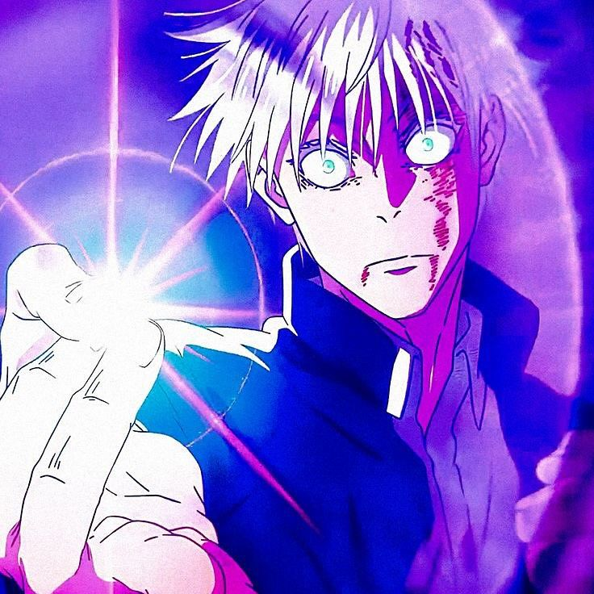

Roxo e a tecnica que melhor resume o quanto o Gojo parece estar acima de quase todo mundo. Quando ela aparece, a luta deixa de parecer equilibrada e vira uma demonstracao de poder. E impressionante, quase bonita, mas tambem reforca essa sensacao de que ele sabe exatamente o tamanho da propria superioridade.